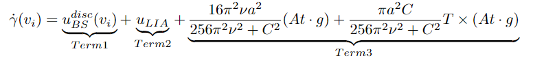
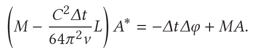

Bubble Ring Simulation
Project Goal
We attempt to simulate the appearance and behavior of underwater "bubble rings" in a physically accurate manner. The problem of rendering and physically describing bubble rings is important because it allows us to show that fascinating natural phenomena can actually be simplified and modeled on a computer effectively.
Project Video
Project Summary
Ryu first learned about bubble rings during a seminar about vortex physics. He eventually introduced the idea in a graphics context to the rest of the group, as well as a paper by Marcel Padilla and others, and everybody was on board. The group split the project into 2 main components: rendering/translation in C++ and physical simulation. Based on factors such as the buoyant force, gravity, and the vortex's circulation itself, a first order, fluid dynamical, differential equation was key. To prevent the accumulation of numerical errors over time, straying the bubble ring too far off course (something which would occur when using Euler integration), the group researched stable Runge Kutta 4th order integration, a method which is implemented in both the resulting project's Python and C++ code. Additionally, the group used resampling to make sure that expansion of a bubble ring is numerically stable via linear interpolation. In order to make sure these concepts translated well to code, the group began its implementation in Python using well-established and documented libraries like NumPy. In fact, the Python code even features an implementation of multiple bubble rings colliding with each other, disconnecting, as well as reconnecting. To continue, rendering involved harnessing the Project 4 framework provided in C++. A bubble ring is structured in the following way: to create an overarching shape for the ring, we prescribe a Filament (formerly Cloth) object which is simply point masses arranged circularly. Then, to provide depth and 3-dimensionality to the bubble ring, each point mass in the filament has an associated thickness (which can actually vary based on our implementation!). Around each point mass in a filament, we arrange other point masses around it to generate a cross-section of that thickness. These point-masses are all meshed together via triangles connecting vertices in adjacent cross sections, making sure the code works in a cyclical fashion. A background and texture was also provided resembling water (using a cube map environment reflected by specular materials). The simulate function and some helper functions translate Python functionality to work with C++ rendering features. Overall, the group was extremely pleased with the results. Not only did we render and physically simulate a single bubble ring with tilt/rotation in C++, we were able to visualize multiple bubble rings interfering with each other in Python, one of our reach goals! Ultimately, the group believes that we effectively organized the scope and complexity of the project so we could achieve such interesting results for a natural phenomena!
Description
Bubble rings are underwater vortex rings filled with air. These can be blown in a pool with enough practice and are seen in nature with dolphins and whales blowing bubble rings. Dolphins in particular seem to be able to manipulate and play with these bubble rings, shaping and splitting them. We aim to simulate this fascinating natural phenomena on a computer.
We divided up this project into two sections: physics and rendering. The physics will follow the paper "On Bubble Rings and Ink Chandeliers" by Padilla et al., 2019 in understanding and implementing the equations that shape and evolve the bubble ring. The rendering will seek to modify the CS 184 Project 4: Cloth Sim code to be able to properly render the bubble ring simulation. The work was largely parallelizable, allowing for efficient progress on the project from these two angles.
Physics
The fluid mechanics and vortex dynamics behind the evolution of bubble rings are quite complex and intriguing. Padilla et al., 2019 develop a simulation method for bubble rings and ink chandeliers by looking at the dynamics of vortex filaments. In this section, Ryu, the resident applied math/fluid mechanics person, will attempt to describe the physics and numerical algorithms presented by the paper. For a complete description, the readers are encouraged to read the paper, "On Bubble Rings and Ink Chandeliers" by Padilla et al., 2019.
1: Representation of the Bubble Ring

|
The bubble ring is represnted as a vortex filament, which is comprised of a closed center curve γ in ℝ3 and a thickness a along the curve. This curve can be discretized and represented as a polygon. The vertices of the polygon carry position information, and the edges have length, direction (which is tangent to the curve), and thickness data. At a high level, the equations of motion are applied to the vertices to evolve them in time, and different equations are applied to model the air flow through the bubble ring based on the new positions, updating the thickness. Finally, distances between vertices are tracked for collisions and bubble rings are reconnected or split based on energy minimization principles.
2: Simulation

|
A bubble ring underwater experiences a buoyant force pushing it to the surface. In addition, there are lift forces from the fluid motion generated by the vortex, forces from thickness variations in the bubble ring, and dissipation. For a bubble ring, the buoyancy force is estimated by an Atwood number of -1 times gravity, thus it points up towards the water surface as expected.
|

|
The equations of motion eventually collapse into a first order differential equation for the velocity at each vertex for curve γ given by Eq. 18 in Padilla et al., 2019 shown above in a modified form. Circulation C, Atwood number At = -1, kinematic viscosity ν = 1e-6 m2/s are given, and a is the thickness associated with a vertex. The velocity of vertex vi is computed in three parts: Biot-Savart velocity, localized induction, and Boussinesq term indicated in the equation as Term 1, Term 2, and Term 3 respectively.
Here, a term of interest for multiple bubble rings is the first Biot-Savart velocity term, since it is affected by the location and circulation of every vertex of every ring in the system.
Given the velocity at each vertex computed by the equations of motions above, their position is evolved in time using a Runge-Kutta 4th order integrator. This involves computing four intermediate steps and summing together with proper weights. An important detail here is to modify thicknesses during these intermedaite steps to conserve the volume of the air inside the bubble ring as positions - and thus the size of the ring - change. An additional volume conservation scaling of thicknesses to the initial volume is applied after integration. These equations do not take into account the pressure of the water column nor the expansion of air as pressure decreases, which would make this scaling unrealistic.
3: Resampling

|
With the above equations of motion implemented in Python, we can see the initial bubble ring in blue rising over time to its final state in purple. The bubble ring expands as it rises, and distances between vertices increases and can create numerical instabilities. A resampling method is needed to keep numerical stability. In Padilla, et al. 2019, a Houdini functionality handles this resampling. We implement resampling through a 1d interpolation over the length of the ring and find positions, thickness, and circulation along the ring at a standard length interval. This is shown above, where the distance between vertices stays constant as the ring expands.
4: Thickness Flow
|

|
After an update in position, the thickness of the bubble ring allowed to change according to Burgers's Equation rearranged into Eq. 27 in Padilla et al., 2019 for a backward Euler scheme. Here, the flux of air within the bubble ring is calculated, and the thickness along the ring is updated in time.
5: Collisions
5.1: Hairpin Removal
Hairpins in this context refer to sharp corners in the bubble ring. Small scale features that result in these hairpins are difficult to resolve in simulation, and is reasonable to renormalize to avoid numerical instabilities. These hairpins appear most frequently in bubble ring collision scenarios near reconnection or splitting sections. Padilla, et al. 2019 do not mention this in thier paper, however hairpin removal appears in their Houdini implementation, and generally follows details from Chorin, 1993.
For our implementation, we assume hairpins only occur between neighboring edges on the bubble ring. Thus we can iterate over all pairs of edges and compute the angle between them. If the angle is too small < 35 degrees, the two edges are merged into a single edge, and the vertices of the ring are updated accordingly. This effectively smoothens the ring.
5.2: Reconnection and Splitting Criteria
|
|
The reconnection and splitting of bubble rings is mainly driven by proximity of filament segments and energy minimization. This reconnection or splitting criteria can be modeled through a method of Weissmann and Pinkall, 2010. A modification is made by Padilla et al., 2019 to check this criterion over pairs of curve segments instead of individual edges.
For each vertex, the distance to every other vertex in the system is computed and those which are near are recorded. Then, we iterate over these pairs of vertices and find the pair of curve segments given by the vertices and 2-3 neighboring vertices on each side. The two curve segments and the new reconnection segments are shown above as δ. This is the region where the reconnection criterion is computed.
|
|
The reconnection criterion is given by the equation above, where λ is the length energy factor, ΔL is the difference between the distances of the new reconnection segments and the old segments, C is the mean circulation of the four corner vertices, and ΔE is an energy associated with δ. This energy is given by a flux of the velocity field generated by the two rings through the reconnected ring and is detailed in Appendix A of Weissmann and Pinkall, 2010. This criterion also applies for splitting, which is the opposite direction of the diagram above.
5.3: Reconnection and Splitting

|
After a pair of segments passing the reconnecting criteria is found, reconnection commences. This involves an indexing nightmare of connecting the correct segments together and creating the updated position, thickness, and circulation vectors in the correct orientation. Failure of indexing and/or the reconnection criterion results in a jumbled mess shown above.
5.4: Python Implementation
Due to the complexity of the physics and difficulty of reading through the Houdini implementation by Padilla, et al. 2019, this was first implemented in Python rather than C++. This allowed for work on the physics to run parallel to the rendering and was much easier to debug and visualize with matplotlib.
The position, thickness, and circulation of the bubble rings were kept in NumPy arrays. One main change in translating Houdini code to Python was understanding the indexing and iterations over vertices or edges. The major difficulty encountered here was understanding what parts of the papers and their equations corresponded to the sample Houdini implementation.
5.5: C++ Implementation
Once the C++ framework - which relied on the rendering described in the following section - was built, the Python code was again translated to C++. This was implemented directly into the Cloth::simulate() function from Project 4, replacing the existing integration scheme. Of the sections shown in the chart in Section 2, the Runge Kutta 4th order integrator with the velocity and thickness modifications was implemented successfully in C++ along with volume conservation. The other sections of resampling, thickness flow, and reconnection unfortunately did not make it into the C++ simulation. However, these were successfully implemented in Python.
Rendering
In the previous section, we described our methods to simulate the evolution of bubble rings. In this section, we outline how we translate the physics/mathematical models into a rendering.
1. Starting Point
The starting point for our simulation system is Project 4:Clothsim. We chose this as our starting point because it could already render and simulate wireframes, so we could focus on creating the bubble ring’s wireframe and developing proper shaders for it instead of creating the entire system from scratch.
2. Classes and Building the Wireframe
In Project 4, we referenced cloth, pointmass, and spring classes. For our implementation, we did away with the spring class and modified the cloth class to instead represent a bubble ring. This required storing some additional properties like ring radius, tilt angle (the starting tilt of the bubble ring), and the number of vertices in the bubble ring. We also modified the pointmass class to store the radius of the bubble ring at that point.
We built the wireframe in cloth::buildGrid() by first instantiating the outer pointmasses that define the bubble ring’s shape. Then we created a loop of pointmasses around each pointmass in the outer frame at a certain radius. This gives the bubble ring shape in three dimensions.
3. Meshing and Shading
|
|
Meshing proved to be challenging because the existing code in cloth::buildClothMesh() was specifically built to mesh a two-dimensional cloth. The bubble ring is three-dimensional, however, so we had to overhaul the existing code by rethinking the relationships between adjacent triangles on the mesh. What helped us with linking the triangles of the mesh together was realizing that the bubble ring is similar to a cloth that has been wrapped around to itself along the long edge, and then connected along the two circular segments that arise. Additionally, we had to be sure to only create triangles along the outside of the mesh, which involved pointer arithmetic to skip over the pointmasses in the bubble ring frame that are inside the bubble ring.
To shade the bubble ring, we used a cube-mapped version of water caustics as the environment which is specularly reflected by the bubble ring itself. This allows us to simulate the appearance of reflective ripples on the bubble ring’s surface. Additionally, we created a background by placing planes around the bubble ring that also mirrored the environment, so the bubble ring appears to be rising through water.
|
|
|
Results
Above is the initial simulation made in Python to test our implementation of the bubble ring physics. As expected, the bubble ring rises and expands.

The above Python simulation shows our investigation into implementing reconnection of the bubble rings. Initially, the two bubble rings are attracted to each other, and they merge. Afterward, they separate into two rings. Unfortunately, we were unable to implement this reconnection feature into our rendered simulation in C++ within our time constraints.
The above left video shows our completed product of rendering the bubble ring and simulating its motion. The bubble ring starts off in a flat position, then it rises while both expanding and thinning. The video on the right is the same simulation but with different colors for better visibility.
The bubble ring in these videos is initialized with a tilt of 45 degrees. As with the previous case, the bubble ring rises while both expanding and thinning. However, in this case, we see that the bubble ring decreases its tilt angle over time, approaching a tilt of 0 degrees.
References
Chorin, Alexandre Joel. "Hairpin removal in vortex interactions II." Journal of Computational Physics 107.1 (1993): 1-9.
Padilla, Marcel, et al. "On bubble rings and ink chandeliers." ACM Transactions on Graphics (TOG) 38.4 (2019): 1-14. https://cseweb.ucsd.edu/~alchern/projects/BubbleRingsInkChandeliers/ https://www.youtube.com/watch?v=ZZt80lk6-O0
Weißmann, Steffen, and Ulrich Pinkall. "Filament-based smoke with vortex shedding and variational reconnection." ACM SIGGRAPH 2010 papers. 2010. 1-12.
Berkeley CS 184 Spring 2022 Project 4: Cloth Simulation code
Team

Ryu Akiba
Ryu Akiba is a 4th year applied mathematics major with a concentration in fluid mechanics. He enjoys working with data and mathematical models. He worked on the physics understanding and Python implementation of the bubble ring simulation.

Marco Gellecanao
Marco Gellecanao is a 4th year computer science major. Given the working Python implementation of the bubble ring physics, he worked on implementing the same logic in C++ for integration with the rendering parts of the project.

Srinivasan Madhavan
Seenu Madhavan is a 3rd year EECS major. He worked on building, meshing, and shading the bubble ring and its environment.